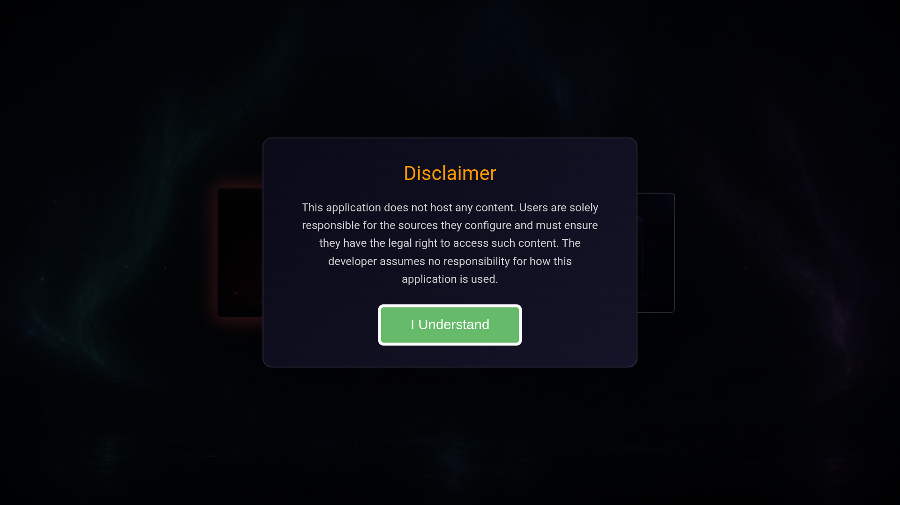
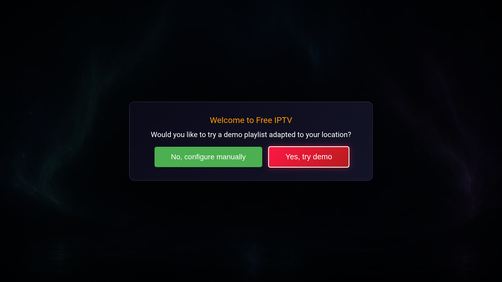
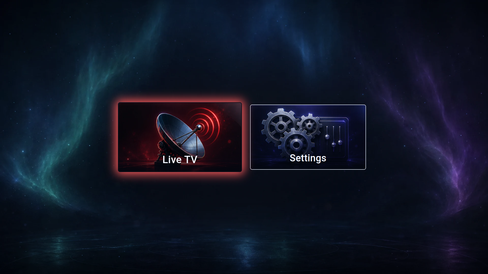
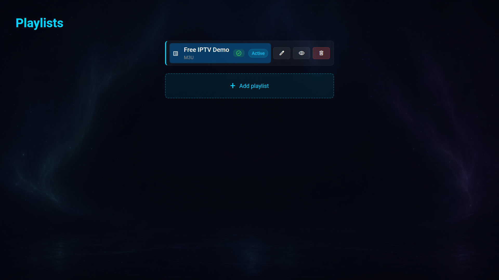
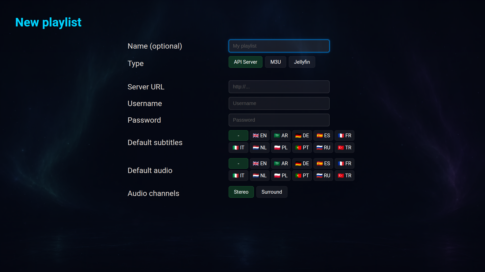
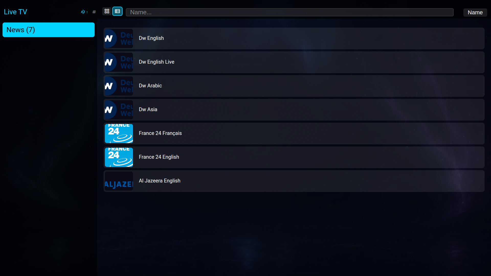
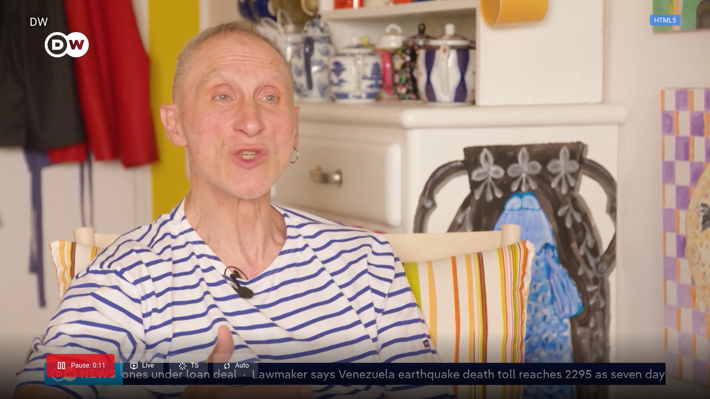
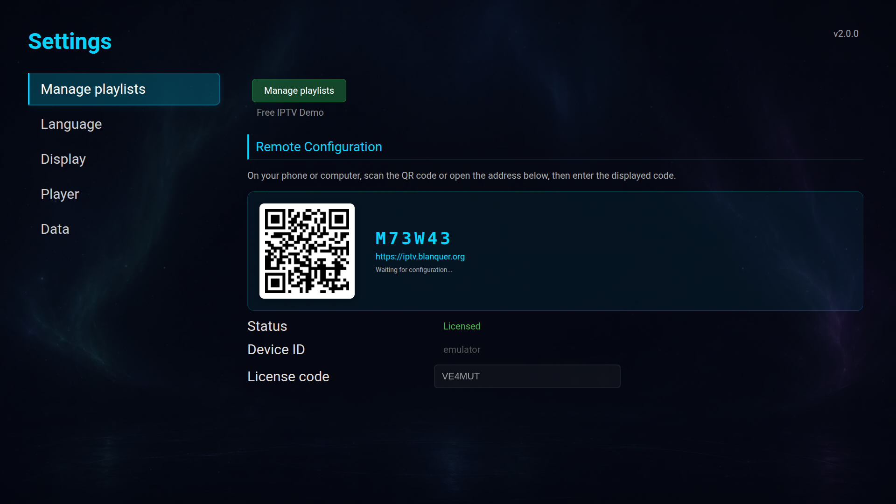
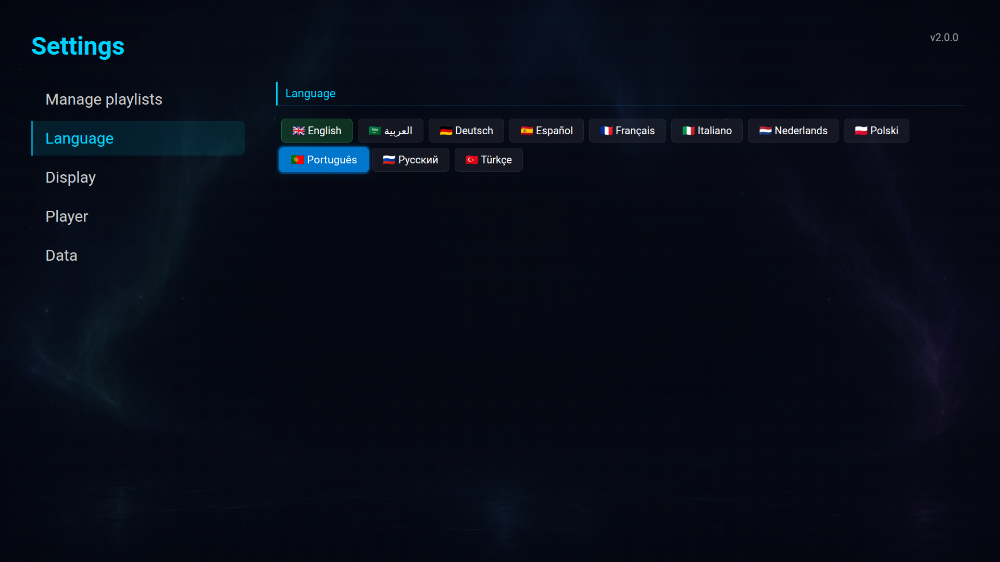

Application UI Description
Content Provider: Eric Blanquer
| File Version | Date | Description | Author | Related App Version |
|---|---|---|---|---|
| 1.0 | 2026-03-29 | Initial submission | Eric Blanquer | 1.0.0 |
| 1.1 | 2026-03-31 | Added app preview images and settings screenshot | Eric Blanquer | 1.0.2 |
| 2.0 | 2026-07-02 | Updated for the 2.0 release (new "Aurora" home screen). All screenshots recaptured in English. Added first-launch (disclaimer and demo playlist), playlist setup, remote configuration, live player and language screens. Added the related application version column. | Eric Blanquer | 2.0.0 |
Free IPTV is a media player for Samsung Smart TVs. It lets users watch their own IPTV sources: live TV channels, movies (VOD) and series, using either an M3U playlist URL or provider credentials (Xtream API server / Jellyfin).
First launch
├── Legal Disclaimer ("I Understand")
└── Welcome ("Would you like to try a demo playlist?")
├── Yes, try demo → loads the bundled demo playlist
└── No, configure manually → Playlists
Home Screen (Aurora)
├── Live TV → Browse (categories + channels) → Player
├── Movies (VOD) → Browse (categories + grid) → Details → Player [API Server playlists]
├── Series → Browse (categories + grid) → Details (seasons/episodes) → Player [API Server playlists]
├── Manga / Sport / Entertainment → Browse (filtered content) [API Server playlists]
├── History → Browse (watch history) → Player
└── Settings
├── Manage Playlists (add / edit / delete: API Server, M3U, Jellyfin)
├── Language (11 languages)
├── Remote Configuration (QR code, iptv.blanquer.org)
├── Display (view mode, text size, filters)
├── Player (preferred player, audio options)
└── Data (cache, history)
Sections Movies, Series, Manga, Sport and Entertainment appear only when an API Server (Xtream) or Jellyfin playlist is configured. With the bundled demo (an M3U playlist of live channels), the Home screen shows Live TV and Settings.
Shown on launch. The user must acknowledge that the app does not host content before continuing. Button: "I Understand".

Offered on first launch when no playlist is configured. Buttons: "Yes, try demo" (loads the bundled demo playlist) and "No, configure manually" (opens the Playlists screen).

Grid of section tiles. Live TV and Settings are always available. Movies, Series, Manga, Sport, Entertainment and History appear when the configured playlist provides them. Navigate with the arrow keys, open with Enter.

Lists configured playlists with their type and active status. Buttons per playlist: Edit, Preview, Delete. "Add playlist" opens the creation form.

Create or edit a source. Type selector: API Server, M3U or Jellyfin. Fields: Name (optional), Server URL, Username, Password (for API Server / Jellyfin) or URL (for M3U). Optional default subtitle/audio language and audio channels.

Category sidebar on the left, content on the right. Toggle grid/list view, sort (A-Z, by number) and search by name. Navigate with the arrow keys; open with Enter.

Full-screen playback. Pressing a key shows the control overlay: playback state, progress/position, live indicator, stream format and quality. During playback: Enter shows/hides the overlay, Left/Right seek, Up/Down change channel (live). Return stops and goes back.

Left menu: Manage playlists, Language, Display, Player, Data. The Remote Configuration panel shows a QR code and a pairing code to configure playlists from a phone or computer (iptv.blanquer.org). Licence status and code are shown below.

Select the interface language from 11 options. The change is applied immediately; no restart is required.

| Button | Action | Remarks |
|---|---|---|
| ENTER / OK | Select / Play. In player: show/hide the control overlay | |
| UP / DOWN | Navigate menus and lists. In player (live): change channel | |
| LEFT / RIGHT | Navigate. In player: seek backward / forward. In Browse: switch between category sidebar and content | |
| Ch. Up / Down | Page up / down in long lists | |
| PLAY / PAUSE | Play or pause playback | |
| STOP | Stop playback and return to Browse | |
| RED | Toggle grid / list view | |
| GREEN | Add / remove favourites | |
| YELLOW | Sort options | |
| BLUE | Filter options | |
| RETURN | Go back to the previous screen | Standard key — not modified |
| EXIT | Close the application | Standard key — not modified |
| Item | Details |
|---|---|
| How to change the language |
Go to Settings → Language → select the desired language from the list. Supported languages: English, Arabic, German, Spanish, French, Italian, Dutch, Polish, Portuguese, Russian, Turkish (11 languages). The interface language changes immediately after selection. No restart is required. |